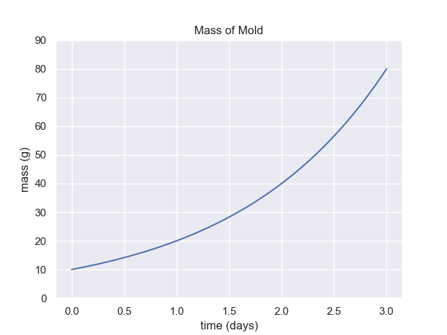
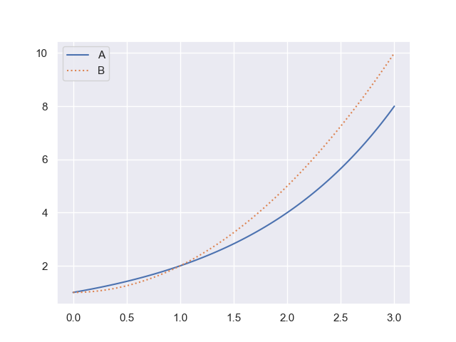
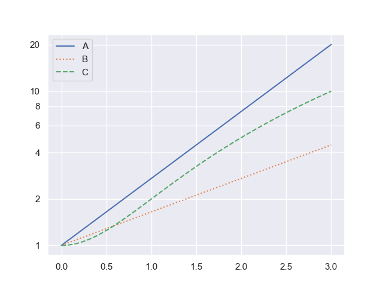
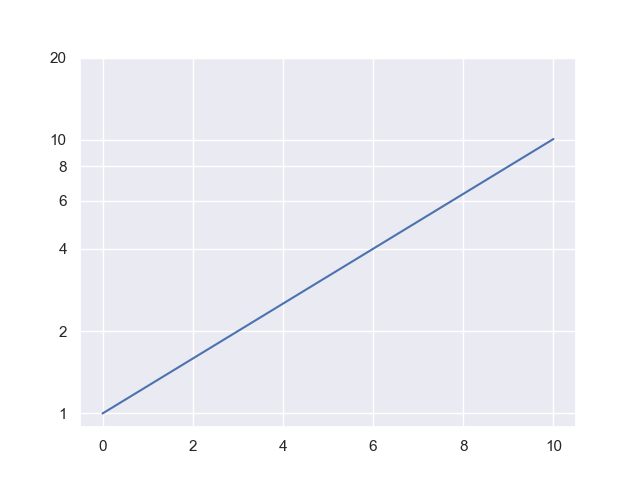
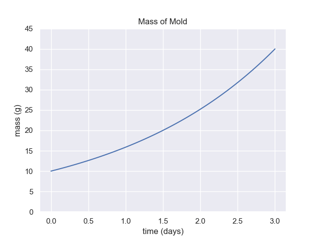
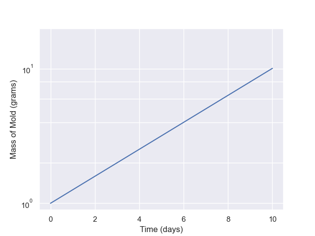
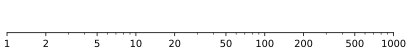

Exponential Relationships Exercises
1 Exponential Course Notes
Read through the exponentials section of our course notes.
- What is the key way to determine if something is following a linear equation?
- What is the key way to determine if something is following an exponential equation?
- How are linear functions and exponential functions similar and different?
2 Exponential Article
Find and link to an article of a topic of interest discussing exponential growth.
- What is the article about?
- What features of the topic show that it fits the definition of exponential growth?
3 Exponentials Metacognition
Look over the topics and exercises we have done so far.
- Which topics do you have the strongest understanding of?
- Which topics do you not understand yet?
4 Demonstrate Doubling Time

For the graph above, demonstrate by showing at least 3 intervals on the graph, that the doubling time is 1.5 days.
5 Use Formula to Extrapolate
The mass of mold on my pizza is 2 grams right now. Mold scientists tell me it will grow according to the function
$$ \text{Mold (grams)} = 2 e^{0.08 t} $$
where $t$ is the number of hours from now.
How many grams of mold will there be in twelve hours?
6 Extrapolate from Graph

For the graph above, if the growth rate does not change, what is the expected mass of mold after 6 days total.
7 Doubling Time Extrapolation
For the graph above what is the mass of mold on day 6? (Time equals 6.0)
8 Which is Exponential (Linear Scale)

Which of the above graphs is exponential?
- A
- B
- Both A and B
- Neither A nor B
Explain the reasoning behind your selection.
9 Which is Exponential (Log Scale)

Which of the above graphs is exponential? Discuss the reasons for your decision.
- A (yes or no)
- B (yes or no)
- C (yes or no)
10 Doubling Time (Log Scale)

Please find and report the doubling time for this graph. How is it different from a linear-scale graph?
11 Forward or Inverse to Find Amount
Using the graph for 7 Doubling Time Extrapolation:
- Estimate the time at which the mass of mold is 15 grams and 30 grams.
- If you were to do this analytically (using formulas) do you need an inverse (log) function or the exponential function to find the amount?
12 Forward or Inverse to Find Time
Using the graph for 7 Doubling Time Extrapolation:
- Estimate the mass of mold at day 1 and day 2.
- If you were to do this analytically (using formulas) do you need an inverse (log) function or the exponential function to find the time?
13 Estimates (Linear Scale)
You have the following graph. At what time will we reach 27 grams of mold?

14 Estimates (Log Scale)
You have the following graph. When does the mass equal 7 grams?

15 Inverse base $e$
We have the expression for mold growth of
$$ \text{mass} = A \cdot e^{b t} $$
where $A = 2$ grams and $b = 0.08/\text{hours}$.
How long until I have 20 grams of mold?
16 Inverse base 10
$$ \text{mass} = A \cdot 10^{b \cdot t} $$
where $A = 2$ grams and $b = 0.1/\text{hours}$.
How long until I have 50 grams of mold?
17 Draw Your Own Log Scale
On a piece of paper
- create four evenly spaced marks
- for each of these marks, write 1, 10, 100, 1000
- halfway between each of those marks, write another mark
What number goes on each of these new marks?
18 Create Spreadsheet Graph
In this exercise you’ll use a spreadsheet to graph an exponential function
- Make a table of data with $x$ and $y$ values
- Create a chart with a linear $y$-scale
- Create a chart with a log $y$-scale
19 Logarithmic Scale Roots
Using a logarithmic scale, find the square root of 100, 1000, and the cube root of 100 and 1000.
Show the distances on a scale.

20 Determine if Exponential or Not
Using the provided spreadsheet file, use a spreadsheet to determine if the data is exponential or not.
Describe the test you used for the data.
Challenge: Determine the formula for the non-exponential data
21 Estimate Logarithm with Distance
Show how to estimate the logarithm of a number between 20 and 90 using a logarithmic scale on paper and a length measurement.
- Choose your own number
- Show the base 10 logarithm
- Show the natural logarithm
- Show explicitly how the measured lengths in mm can be converted to the logarithm
22 Draw Linear and Log Scales
This uses the log and linear scale handout.
- Which scale is linear, a or b?
- Which scale is logarithmic, a or b?
- Use a ruler and mark the locations of 2.5, 4, 7, 10, and 15 on the linear scale.
- Use a ruler and mark the locations of 4, 8, 10, 16, 20, 25, 40, 80, 100, 125, and $\sqrt{8}$
23 Exponential Graph from Scales
Use a logarithmic scale for this exercise.
- Measure the length between 1 and $e$ on the logarithmic scale
- Mark out a linear scale where 1 data equals this length
- Label the logarithmic scale as $y$ and the linear scale as $x$
- Make a table of $x$ and $y$ values according to your scales
- Plot this out
For practice do this again for other values besides $e$.
24 Exponents and Logarithms from Scales
Use a logarithmic scale for this exercise.
- Measure the length between 1 and $e$ on the logarithmic scale
- Mark out a linear scale where 1 data equals this length
- Label the logarithmic scale as $y$ and the linear scale as $x$
- Make a table of $x$ and $y$ values according to your scales
- Show that these $x$ and $y$ values give excellent estimates for $e^x$ and $\ln y$ on a calculator
For practice do this again for other values besides $e$.